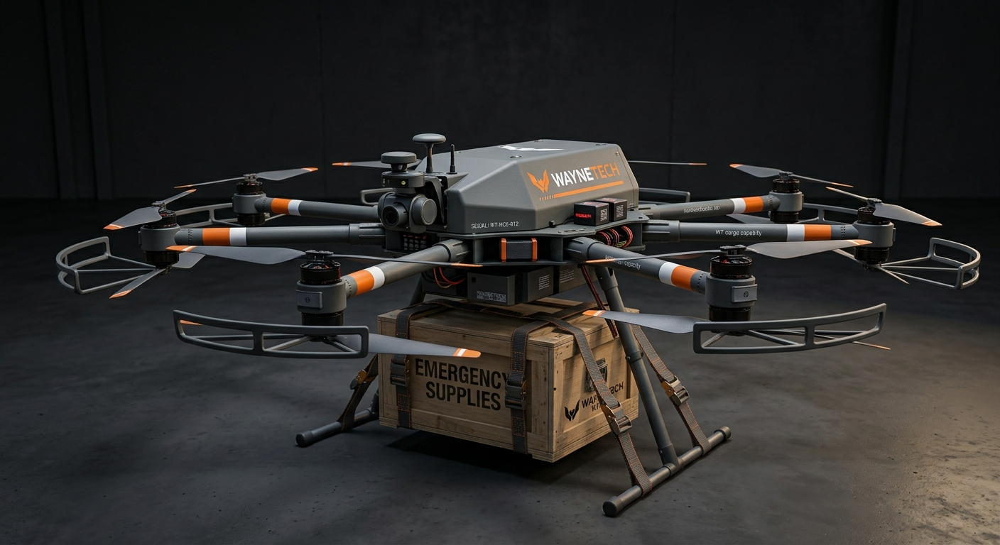
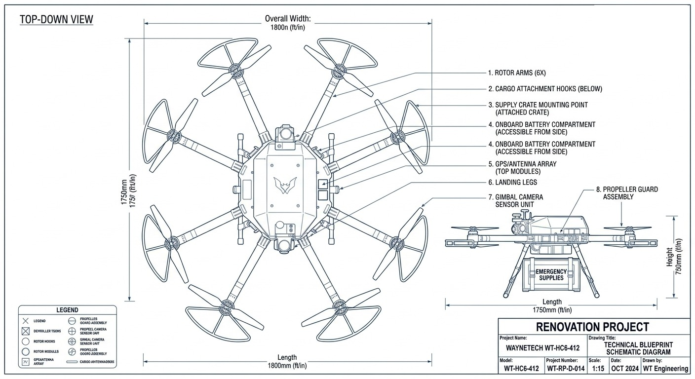

☰
Accueil
AeroSpace
Aeromat-A-01
Falcon-G-01
Hexa-C6-412
Mobility
Warden
Jet-WT
Viper
Biotech
Exo-Tissu
Stride
Secure-Link
Aegis-17
CivilTech
Laptop Study Book
Nest Assistant
Beacon Compact
Contact
WAYNETECH // DIVISION R&D : AÉRONAUTIQUE & SURVEILLANCE.
Plateforme aérienne // Logistique et assistance humanitaire.
Fiche Projet : Hexa (Unité Cargo 412-VTOL)
Classification :
interne sécurisé
Accès Restreint (Niveau 4)
Nom de code officiel (B2B) :
Module de livraison d'urgence aérienne pour zones à haut risque.
Usage réel sur le terrain :
Drone tactique autonome à décollage et atterrissage verticaux (VTOL) pour la livraison de materiel médicale, de nourritures et fournitures essentielles.


Caractéristiques Générales
Configuration
Hexacoptère de livraison lourde
Modèle
WT-HC6-412
Envergure
1,80 m
Longueur
1,75 m
Hauteur
0,75 m
Masse à vide
~28 kg
Charge utile maximale
~40 kg
Masse opérationnelle lourde
~68 kg
Propulsion
Configuration
6 × moteurs électriques brushless
Bras de rotor
6, pliables pour transport
Alimentation
Batterie lithium haute densité, modulaire
Temps de charge complète
~75 minutes
Performances
Vitesse de croisière visée
65 km/h
Vitesse maximale visée
90 km/h
Plafond opérationnel visé
~1 500 m
Résistance au vent
Jusqu'à 45 km/h
Décollage / atterrissage
Vertical (VTOL), sans piste nécessaire
Autonomie & Emploi
Autonomie à vide
~55 min
Rayon d'action opérationnel visé
~15 km aller-retour
Emploi
Reconnaissance, surveillance, renseignement tactique
Utilisateurs prévus
Livraison de vivres et matériel en zone isolée ou sinistrée
Autonomie en charge (40 kg)
~22 min
Déploiement
Zones de catastrophe naturelle, régions isolées
Terrains accidentés, sans infrastructure d'atterrissage
Compatible largage précis sans atterrissage complet
Déployable depuis un point de rassemblement mobile (véhicule, base temporaire)
Signature
Peinture grise avec bandes orange et blanches haute visibilité
Objectif : être vu et identifié, pas de recherche de discrétion
Feux de position clignotants en vol
Marquage WayneTech Relief bien visible sur le fuselage
Système De Fret
Points d'ancrage et sangles de fixation sous le fuselage
Compatible caisses standardisées jusqu'à 40 kg
Largage télécommandé du point d'attache en vol stationnaire
Compartiment isotherme disponible en option (vivres, matériel médical)
Diagnostic embarqué prédictif
Liaison De Pilotage
Pilotage automatique ou manuel à distance
Navigation GPS/inertielle redondante
Liaison de données sécurisée avec la station de contrôle
Retour vidéo temps réel (caméra frontale)
Mode de retour automatique en cas de perte de liaison
Système
Architecture électrique redondante sur les 6 moteurs
Maintien du vol en cas de panne d'un rotor
Diagnostic embarqué prédictif
Modules remplaçables sur le terrain sans outillage lourd
Gestion Thermique
Dissipation passive du bloc batterie
Surveillance thermique du contrôleur de vol
Coupure automatique en cas de surchauffe critique
Protection
Fuselage en fibre de carbone renforcée
Gimbal caméra protégé par carénage
Structure interne redondante pour l'électronique critique
Aucun blindage lourd (priorité à la légèreté et à l'autonomie)
Technologies WayneTech
Vector — Gestion adaptative de la stabilité en vol chargé
Fusion — Optimisation de la trajectoire selon le terrain et la météo
Gestion thermique WayneTech du bloc batterie
Wayne Emergency Mode — Atterrissage d'urgence automatique en cas de défaillance critique
Communications
Communications sécurisées chiffrées
Liaison avec la station de contrôle et les équipes de secours au sol
Fonctionnement essentiel sans connexion WayneTech centrale
Ecosystème WayneTech : Aeromat Assistance™
Diagnostic à distance
Pièces détachées et rotors de rechange
Maintenance et calibration
Formation au pilotage et à la coordination logistique
Support technique dédié
Contrôle Des Technologies Sensibles
Utilisation des fonctions normales par l'opérateur habilité
Capacités de capteurs avancés soumises à autorisation selon réglementation locale
Aucune fonction offensive, usage strictement logistique/humanitaire
Contrôle des technologies propriétaires conservé par WayneTech